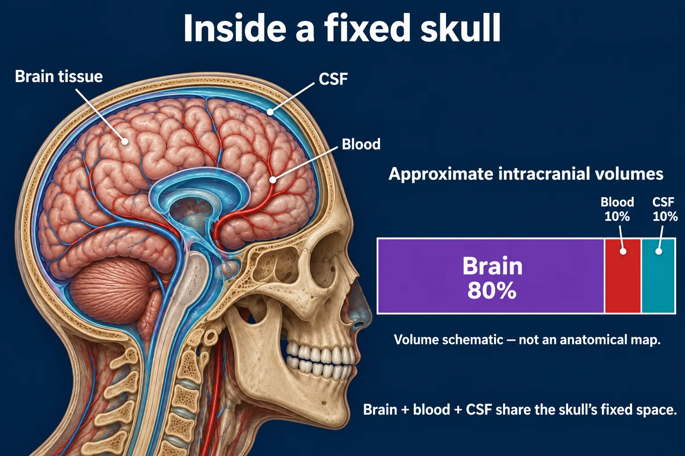

ABSN STUDY HUB · VISUAL STUDY CARD
Increased intracranial pressure

Components are shown schematically; their pictured sizes are not proportional volumes.
Course labels and notes from the original graphic, arranged into readable sections. The illustration is schematic.
Course overview
- INCREASED ICP — A FIXED BOX WITH THREE THINGS IN IT
- Brain, blood and CSF share one rigid skull. If one grows, another must shrink, or the pressure rises.
⭐ THE ONE TO REMEMBER
- A change in level of consciousness is the earliest sign, every time. By the time the pupils change, you are already late.
THE MONRO–KELLIE RULE
- Normal ICP 5–15 mmHg. Sustained above 20 is treated.
⭐ EARLY SIGNS COME FIRST — AND THEY ARE SUBTLE
EARLY
- A change in level of consciousness — the first sign Restless, confused, harder to rouse Headache, worse in the morning Vomiting without nausea, often projectile
LATE
- Pupil fixed and dilated on one side Posturing, then no response at all
Blood
- 10%
CSF
- 10%
Brain
- 80%
🚨 CUSHING TRIAD — HERNIATION IS HAPPENING
BP
- widening pulse pressure
- ↑ sys, ↓ dia
- Pulse
- bradycardia
- slow, bounding
- Breathing
- irregular
- Cheyne-Stokes
- This is late. Call before you finish assessing.
✅ WHAT LOWERS THE PRESSURE
- Head of bed 30°, head midline — never flexed. No hip flexion, no straining, no Valsalva. Cluster care; space out anything stimulating. Mannitol or hypertonic saline; watch osmolality.